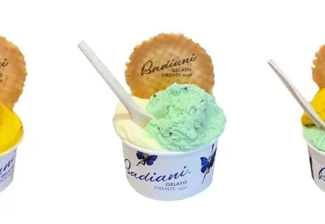

Una sezione dedicata a tutte le schede che non sono “prodotti”: apertura, set-up vetrine, packaging,
procedure di servizio e chiusura. Qui trovi gli standard che tengono il banco pulito, veloce e coerente.

Standard operativi
Apertura · Setup · Service · Chiusura
Prep mattino-14 °CHACCP
Routine apertura
Controllo temperature, pulizia vetri, riordino vaschette (FIFO) e verifica etichette.
La vetrina è il primo biglietto da visita: deve essere impeccabile e ordinata.
Temperature: -14/-15°C (registra su log HACCP)
Pulizia: vetri interni/esterni con prodotto specifico
Vaschette: riordina per colore/gusto, pulisci bordi vaschetta
Etichette: tutte presenti, dritte e pulite
Utensili: spatole pulite e in acqua corrente (se sistema a flusso continuo) o cambi frequenti
1 · Registra temperature su log HACCP.2 · Pulisci vetri e bordi vaschette.3 · Verifica etichette e utensili pronti.
Se una vaschetta è quasi vuota, sostituiscila subito (non raschiare il fondo davanti al cliente).
DisplayFIFOVisual
Set-up giornaliero
Cake stand con slice mancante, croissant su tray dedicati, brownies/puddings allineati.
Vetrina deve sembrare sempre piena
Label accanto al prodotto
Prima fetta di loaf esposta
1 - Posiziona cakes sui cake stand e rimuovi una fetta per mostrare l'interno.2 - Disponi croissant in base ai gusti disponibili mantenendo le file pulite.3 - Aggiorna etichette, verifica shelf life e riempi all'occorrenza.
Fotografa il set-up ideale e condividilo nel gruppo store per mantenere coerenza.
Warm slice10'' x latoService
Servizio Caldo (Pandoro)
Pandoro scaldato: stessa tecnica del panettone. 10 secondi per lato sulla piastra crepe (senza olio). Toasta leggero per ravvivare la struttura.
Servi immediatamente con pairing consigliato (crema mascarpone tiepida, gelato, sauce).
Chiedi preferenza al cliente: "Vuoi la versione tiepida?"
Piastra crepe: pulita e asciutta, no olio
Timing: 10 secondi per lato (non di piu')
Servizio immediato: impiatta subito per mantenere volume e calore
Campioni: tieni piccoli triangoli per assaggiare durante le ore di punta (storytelling)
1 - Chiedi preferenza al cliente.2 - Tosta e impiatta rapidamente per non perdere volume.3 - Servi con pairing consigliato.
Campiona piccoli triangoli per raccontare prodotto nelle ore di traffico.
💰 UpsellingOpzione 1: "Vuoi la versione calda con gelato? Esperienza premium"Opzione 2: "Aggiungiamo crema mascarpone tiepida?"Opzione 3: "Chiedi SEMPRE preferenza calda/fredda per guidare upsell"
🛠️ Pro tip: 10 secondi per lato esatti, no di piu' o si secca. Impiatta veloce per non perdere volume soffice. Campiona triangolini nelle ore punta per stimolare ordini.
DeliveryTreat boxTake away
Packaging take away
Per due panettoni: una sauce pot riempita 3/4, quattro angoli del treat box.
1 - Inserisci sauce pot al centro, blocca i panettoni agli angoli.2 - Chiudi con lid + tape, etichetta shelf life.3 - Conserva in freezer finche' il rider arriva.
Comunica al cliente autonomia termica e modalita' di servizio.
💰 UpsellingOpzione 1: "Box da 4 mini invece di 2? Perfetto per famiglia"Opzione 2: "Aggiungiamo doppia salsa per variare gusti?"Opzione 3: "Con biglietto auguri brandizzato diventa regalo perfetto"
🛠️ Pro tip: Sauce pot al centro per stabilita'. Blocca mini negli angoli. Etichetta shelf life e istruzioni servizio. Conserva in freezer fino consegna rider per mantenere qualita'.
SetupVin BruléTank
Allestimento macchina
Macchina Vin Brulé: riempire tank esterno con 600 ml d'acqua senza superare il max, inserire contenitore interno.
1 - Versa 500/1000 ml di mix nel tank argento.2 - Porta temperatura a livello 10 per 25-30 min; poi mantieni a 6-7.3 - Usa il coperchio durante il mantenimento per evitare evaporazione.
Meglio scaldare piccoli lotti per garantire freschezza e aromi.
💰 UpsellingVisual appeal: "Setup macchina in area visibile per attirare ordini"Sampling: "Offri mini assaggi nelle ore punta per conversione"Bundle: "Mulled wine + mini panettone = combo festiva perfetta"
🛠️ Pro tip: Tank esterno: 600ml acqua max. Livello 10 per 25-30 min riscaldamento, poi 6-7 mantenimento. Piccoli batch = freschezza. Coperchio evita evaporazione aromi.
ServizioVin BruléChiusura
Service & chiusura
Vin Brulé: servi con mestolo, fetta d'arancia e controllo shelf life.
1 - Riempire cup con mestolo, aggiungere fetta d'arancia.2 - A fine giornata travasa nel bricco, lascia raffreddare e copri con pellicola.3 - Frigo + label (3 giorni dal primo warm-up; 30 giorni per mix non aperto).
Pulire tank, contenitore e esterno macchina ogni sera con acqua calda e detergente.
💰 UpsellingOpzione 1: "Vuoi aggiungere shot di rum per versione adulta?"Opzione 2: "Fetta d'arancia fresca + cannella stick = presentazione Instagram"Opzione 3: "Racconta spezie natalizie e tradizione per valore percepito"
🛠️ Pro tip: Servi con mestolo dedicato. Fetta arancia fresca sempre. Shelf life: 3 giorni da primo riscaldamento, 30 giorni mix chiuso. Pulizia tank ogni sera con acqua calda.
Dati tecnici & Conservazione
Quick reference · Temperature · Shelf life · FIFO
SettingTemperatureQuick ref
Temperature chiave (quick map)
Temperature chiave da tenere a mente per evitare prodotti fuori standard.
Gelato vetrina: -14/-15 °C (target)
Display freezer treats: almeno -14 e senza ghiaccio (defrost weekly)
Thermal storage box (gelato take-away): autonomia max 1 ora prima di tornare in freezer
1 · Se la temperatura è fuori range: avvisa subito e non “compensare” con service tricks.2 · Sliding doors in posizione quando non busy per preservare -14/-15.3 · Defrost e pulizia programmata = stabilità temperature.
ConservazioneFIFOLabel
FIFO & etichette (regola d'oro)
Ogni modulo “storage” in questo training ha un punto comune: FIFO + label chiare.
Etichetta sempre: data preparazione/apertura + scadenza
First in, first out: usa prima ciò che scade prima
Se manca la label: non servire (chiedi al manager)
1 · Controllo label a inizio turno.2 · Controllo FIFO durante i refill.3 · Controllo scadenze in chiusura.
Shelf lifePrepFrigo
Shelf life rapidi (mix & premade)
Promemoria shelf life per controlli veloci durante apertura, refill e chiusura.
Crepe mix: 3 giorni (frigo) + riposo minimo 2 ore
Waffle mix (pre-packed): 2 giorni
Premade matcha: 1 giorno (incluso giorno di preparazione) → frigo
Mulled wine: 3 giorni dal primo warm-up (mix in macchina)
1 · Prepara batch “quanto serve”: meno sprechi, più qualità.2 · Label sempre (data/ora).3 · Oltre shelf life: elimina e rifai.
PackagingTake away1h
Take-away: autonomia termica
La thermal storage box ha autonomia massima di 1 ora: poi il prodotto deve tornare in freezer.
Comunicalo sempre al cliente (qualità e sicurezza)
Consiglia freezer appena possibile
Evita soste “lunghe” fuori controllo (rider/attese)
1 · “Questa box tiene circa 1 ora: poi freezer.”2 · Offri bag termica se prevista dallo store.3 · Per delivery: conserva in freezer fino al ritiro.
ChiusuraWeeklyRoutine
Schedule pulizie (giorno / settimana)
Chiusura e manutenzione programmata = performance costanti e meno imprevisti in servizio.
Gelato vetrina: OFF ogni notte
Gelato vetrina: deep clean weekly
Filtri: cleaning weekly
Display freezer treats: defrost weekly (free of ice)
1 · Segna la giornata di deep clean (non improvvisare).2 · Pulisci prima che si accumuli: è più veloce.3 · Dopo la pulizia: rimonta, sanitizza e lucida.